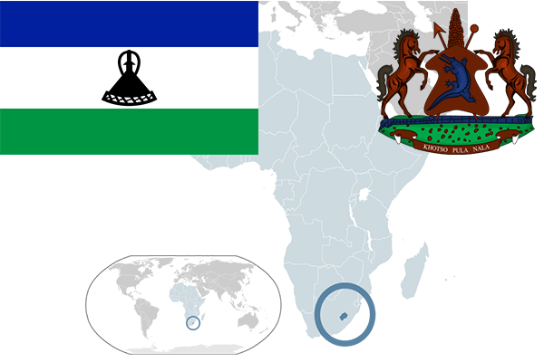

To`liq nomi: Lesoto Qirolligi
Region: Janubiy Afrika
Qonunchilik shakli: Konstitutsion Monarxiya
Mustaqillik kuni: 4-oktabr 1966-yil (Birlashgan Qirollikdan)
Poytaxt: Maseru
Maydoni: 30 355 km² (dunyoda 137 -o`rinda )
Chegaradosh davlatlari: Janubiy Afrika Respublikasi
Aholisi: 2,203,821 (dunyoda 144 - o`rinda, 2016 -yil roʻyxat)
Aholi zichligi: 68,1/km²
Aholining o`rtacha yoshi: 39,95 yil (39,2 ayollar, 40,7 erkaklar)
Rasmiy tili: Ingliz va Sesato tili
Dini: 80% xristian, qolgan aholi mahalliy dinlarga e`tiqod qiladi
Pul birligi: Lesato loti
Telefon prefiksi: +266
Internet domen: .ls
Xalqaro tashkilotlarga a`zoligi: BMT (1966 – yildan)
Dengiz va okeanlarga chiqishi: yo`q
YIM: Butun: $ 7.448 mlrd, Jon boshiga $ 3,868 (2017 - yil roʻyxati)
Yirik shaharlari: Maseru